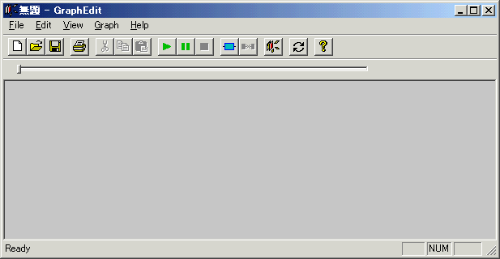
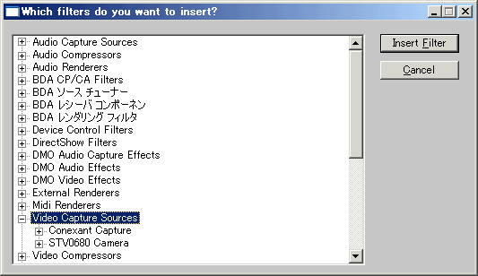
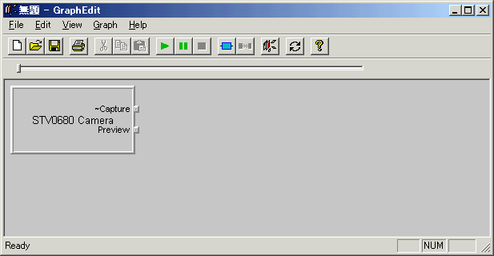
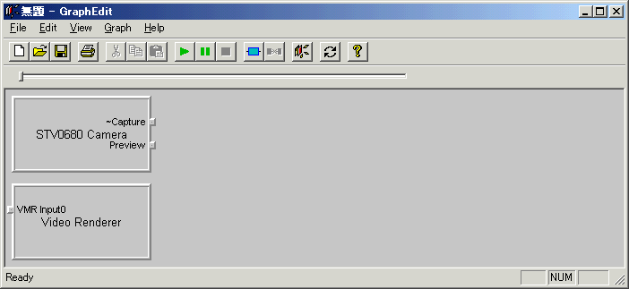
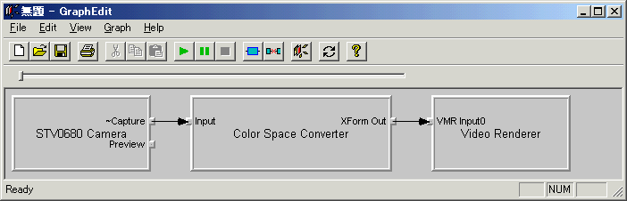

DirectShow関係
２．ライブ動画の再生
いわゆるWebカメラなどといわれるカメラの映像を表示する方法を説明します。
私が使用したカメラは'Che-es! SPYZというワゴンセールで買ってきた安物のUSBカメラです。
（メーカーさんごめんなさい。おもちゃとしては最高です。フォローになってない？ｗ）
まずはGraphEditでグラフを作ってみます。
GraphEditはプログラムを書く前（もちろんデバッグ中も）の検証にかなり便利です。
GraphEditを起動した直後は下記のようにグラフが空の状態です。


このダイアログを開いたままでもメインのウィンドウは操作できるので、
メインウィンドウと重ならない位置にウィンドウを移動しておきましょう。
フィルタはかなりの数があり、「カテゴリ」毎に分けられています。
上のAudio Cpature SourcesやAudio Compressorsがカテゴリ名になります。
カメラのフィルタは「Video Capture Souces」カテゴリにあります。
カテゴリを開くとそのカテゴリに属するフィルタが表示されます。
（フィルタをさらに開くとフィルタのピンなどに関する情報もみれます）
上図では２つのVideo Capture Soucesフィルタがカテゴリに表示されています。
Conexant CaptureフィルタはTVキャプチャボードのフィルタです。
今回は下のSTV0680 Cameraフィルタを使います。
（なおこのフィルタはカメラ付属のドライバをインストールすれば現れます）
OSをWindowsXPにしたついでにChe-es!のサイトから新しいドライバをダウンロードして入れたら
ここで説明してるのと違う名前になっちゃいました(^^;
まぁ他のカメラも似たようなもんなんで大丈夫でしょう（＾＾；；
グラフに追加するには選択してInsertFilterボタンを押すか、フィルタをダブルクリックします。
するとメインウィンドウに下記のようにフィルタが追加されます。

(ダイアログが重なっていると見えないかもしれないので移動してください）
続いて実際に画面に表示する「レンダラ」フィルタを追加します。
「DirectShow Filters」カテゴリにある「Video Renderer」フィルタを追加します。

WindowsXPではVideoRendererフィルタが2種類存在します。（どっちでもかまいません）
ピンの名前は「InputX」又は「VMR InputX」となります。
「Input」は古いやつです。
VMRというのは「Video Mixing Renderer」のことで
複数の画像をそれぞれアルファ値(透明度）を指定して
重ね合わせて表示できるレンダラになります。
（２つの動画を一つのレンダラに繋げて、
じわ〜と動画を切り替えるようなことができます。ちょっと面白いけど、使い道がむず・・・）
この状態で２つフィルタを接続してみます。
STV0680Cameraフィルタの出力ピン「~Capture」ピンをドラッグし、
VideoRendererフィルタの入力ピン「VMR Input0」（又は「Input0」）にドロップします。
すると下記のように接続されます。

ちなみに切断するには矢印を選択して（青色になる）Deleteキーを押せば切断できます。
追加した２つのフィルタの間に「Color
Space Converter」というフィルタが入っていますが、
これは環境によっては入りません。
STV0680フィルタのピンで右クリックしプロパティを見てもらうとわかるのですが、
STV0680フィルタのCaptureピンはRGB24 という形式になってます。
これは２４ビット／ピクセルの形式であることを意味します。
（１ピクセルが24ビット＝３バイトで表現されるということです）
ところがVideoRendererフィルタは現在の画面モードと同じ形式しか受け付けません。
つまり画面モードが24ビットカラー（Highカラー）モードでない場合は、直接接続できないことを意味します。
そんなときに使用されるのがこのColorSpaceConverterで、
RGB24からRGB565（１６ビット／ピクセル）などに変換してくれるフィルタな訳です。
普通このようにフィルタを接続するときに間に変換フィルタが必要なときは
自動的に必要なフィルタを追加してくれます。（GraphEditではConnect
Inteligentがチェックされてるとき）
間にフィルタが入ってほしくない場合はConnect Inteligentのチェックをはずします。
（普通はチェックしておいて問題ありません）
ちなみに~Captureピンで右クリックし
ポップアップウィンドウから「Render Pin」をクリックすると
ドラッグ＆ドロップと同様にVideoRendererまで接続してくれます。
これでグラフが完成したので再生してみましょう。
ボタンを押すか、メニュー「Graph」−「Play」をクリックします。
別ウィンドウにカメラのライブ映像が表示されたと思います。
実はSTV0680フィルタを追加し、出力ピン「Render Pin」すると
自動的にVideoRendererを追加しグラフを完成してくれます（＾＾；
Renderという昨日はレンダラフィルタまで繋げることを意味しますので覚えておきましょう。
またSTV0680フィルタには出力ピンが２つあります。
「~Capture」と「Preview」です。カメラによっては名前が違いますし、１つだったりします。
~CaptureとPreviewの違いは同期信号があるかないかの違いのようです（SPZの場合）。
この違いはファイルに保存する場合に影響してきます。
VBでライブ映像を表示するには、以上の操作をVBから行いグラフを作って実行すればいいことになります。
で、実際のコードが下記になります。
Option Explicit |
前回同様、順に説明していきます。
'カメラのフィルタ名 |
モジュールセクションでは前回同様、定数の定義とフィルタグラフマネージャの変数定義を行います。
定数CAMERA_FILTER_NAME$はカメラのフィルタ名を指定しています。
定数CAMERA_OUTPUTPIN_NAME$はカメラの出力ピン名を指定しています。
これらは環境に合わせて変えてください。
フィルタグラフマネージャオブジェクトの作成までは前回と同じです。
'グラフにキャプチャ（カメラ）フィルタを追加する |
'レジストリに登録されているフィルタをグラフに追加する |
グラフにカメラのフィルタを追加しています。
IFilterInfoオブジェクトはグラフに追加されたフィルタを表す型で、
AddFilter関数は下部で定義しているユーザ関数です。
AddFilter関数でなにをやっているかというと、レジストリに登録されているフィルタを順に調べていって
目的の名前を持つフィルタを見つけたら、それをグラフに追加します。
で、戻り値としてIFilterInfoをを返します。
レジストリに登録されているフィルタはフィルタグラフマネージャのメンバである
RegFilterCollectionコレクションで列挙することができます。
IRegFilterInfo型の変数に入れてNameプロパティを見れば名前を取得できます。
フィルタをグラフに入れるにはFilterメソッドを使います。
引数として登録されたフィルタを示すIFilterInfoオブジェクトの変数を指定します。
ややこしいですが、
（１）RegFilterCollectionコレクションを検索する（名前で検索）
（２）目的のフィルタを示すIRegFilterInfoオブジェクトを
RegFilterCollectionコレクションから取得する。
（３）Filterメソッドでグラフに追加
の流れになります。
IFilterInfo型を返しているのは後で必要になるためです。
「カメラ'〜'が見つかりません」が表示される場合は、
カメラが接続されていないか、
ドライバがインストールされていないか、
カメラのフィルタ名が間違っている
のが原因でしょう。
カメラやドライバによってカメラのフィルタ名は変わるので
GraphEdit等で確認しておいてください。
（上のサンプルコードは家のChe-ez!SPYZ用の設定です）
名前ではなく今接続されているカメラを使いたいって場合は
カメラフィルタ(キャプチャフィルタ)の列挙が必要になります。
これは「５．フィルタグラフ操作用DLL」で公開しているようなDLLが必要になります。
'グラフにビデオレンダラフィルタを追加する |
同様にAddFIlter関数でVideoRendererフィルタを追加しています。
こっちの戻り値は必要ないんで保存してません。
っていうか実はこの行は不要なんです（笑
（下のRenderメソッドでなければ自動的に追加されますんで）
'カメラの出力ピンを取得 |
カメラの出力ピンを名前をキーにして取得しています。
AddFIlter関数の戻り値であるIFilterInfoのFindPinメソッドで簡単に探すことができます。
メソッドの戻り値がピンを表すIPinInfo型ではなく、
引数として渡すことに注意してください。
ここで「カメラのピン’〜’が見つかりません」と出る場合は
カメラのピンの名前（CAMERA_OUTPUTPIN_NAME）が間違っています。
GraphEdit等で確認してください。
もしGraphEditで文字化けで見れないなんて場合は
下記のように書き換えてみてください。
'カメラの出力ピンを取得 |
上のコードは最初に見つかった出力ピンを使用します。
複数の出力ピンがあるカメラもあるので、
本来はメディアタイプなどを調査すべきなんですが
面倒なので省略します。（＾＾；
'カメラの出力ピンからフィルタを接続し、グラフを構築する |
上で取得したピンでRenderメソッドを呼び出し、VideoRendererフィルタまでつなげ
グラフを完成させます。
GraphEditでドラッグ＆ドロップしたのと同様です。
（正確にはポップアップメニューからRenderPinを行ったの同じです。
ドラッグ＆ドロップの場合は、VideoRendererの出力ピンを取得し
Connectメソッドを呼び出す行為になります。）
'ビデオサイズ(縦横)を取得 |
以下は前回と同じで、
映像サイズに合わせてフォームサイズを設定しフォーム内で再生するようにする設定です。
まとめるとこんな感じです。
１．FilgraphManagerオブジェクトを作成
２．カメラフィルタをRegFilterCollectionコレクションから検索
３．カメラフィルタをFilterメソッドでグラフに追加
４．同様にVideoRendererフィルタをグラフに追加（Renderメソッドを使うなら不要）
５．Renderメソッド（或いはConnectメソッド）でフィルタを接続
６．Runメソッドで開始